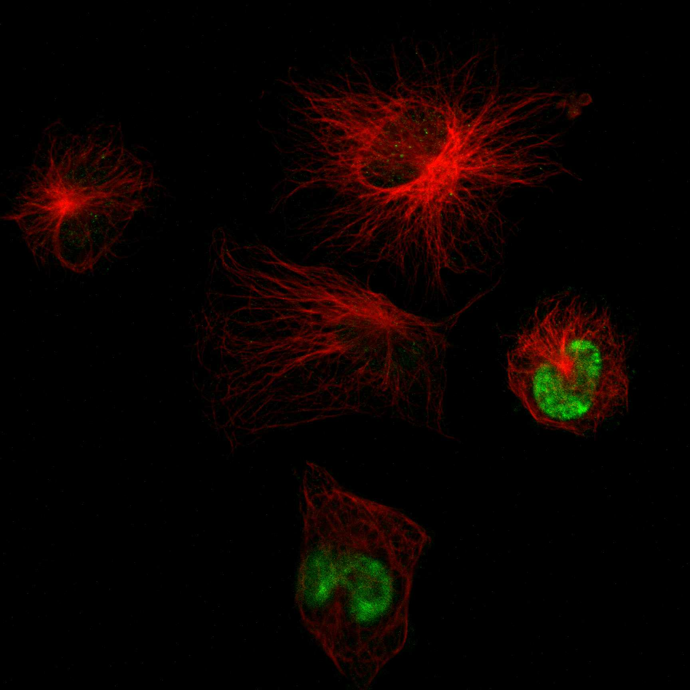

type: protein-evaluation gene: "CECR2" date: 2026-06-01 tags: [protein-scout, nucleoplasm, evaluation] status: scored ---
CECR2 核蛋白评估报告
1. 基本信息
| 项目 | 内容 |
|---|---|
| 基因名 / 别名 | CECR2 / KIAA1740 |
| 蛋白全名 | Chromatin remodeling regulator CECR2 |
| 蛋白大小 | 1484 aa / 164.2 kDa |
| UniProt ID | Q9BXF3 |
2. 评分总览
| 维度 | 得分 | 新权重 | 加权后 | 关键证据摘要 |
|---|---|---|---|---|
| 核定位特异性 | 9/10 | x4 | 36.0 | UniProt nucleus (ECO:0000269); HPA Nucleoplasm (main); GO nucleus (IDA:UniProtKB) |
| 蛋白大小 | 1/10 | x1 | 1.0 | 1484 aa, 164.2 kDa，极大蛋白 |
| 研究新颖性 | 6/10 | x5 | 30.0 | PubMed strict=45 |
| 三维结构 | 3/10 | x3 | 9.0 | AF pLDDT 48.9 (71.5% <50); PDB 3个 (仅 bromodomain 424-538) |
| 调控结构域 | 7/10 | x2 | 14.0 | Bromodomain (acetyl-lysine reader); ISWI chromatin remodeling 调控亚基 |
| PPI 网络 | 7/10 | x3 | 21.0 | STRING SMARCA1 (0.999 exp), SMARCA5 (0.997 exp); 核心 CERF 复合体 |
| 加权总分 | 111/180** | |||
| 互证加分 | +0.0 | |||
| 归一化总分 (÷1.83) | 60.7/100** |
3. 详细分析
3.1 核定位证据
| 来源 | 定位 | 可信度 |
|---|---|---|
| UniProt | Nucleus (ECO:0000269) | 实验证据 |
| GO-CC | nucleus (IDA:UniProtKB), CERF complex (IDA:MGI), euchromatin (IEA) | 多源验证 |
| HPA (IF) | Nucleoplasm (main), Vesicles | Approved, 无IF原图 |
| 功能 | Chromatin remodeling regulator, CERF complex regulatory subunit | 功能即染色质/核定位 |
HPA IF 状态: HPA subcellular IF 图像已重新获取并嵌入（见下方 HPA IF 图像修正块）；此前“暂无/未可靠获取 IF”的表述为采集失败导致的误报。
结论: CECR2 的核定位证据极为坚实 — 作为 ISWI 染色质重塑复合体 CERF 的调控亚基，其功能本身就定位于细胞核/常染色质，UniProt + HPA + GO 三源一致。
3.2 结构与数据源
| 指标 | 数值 |
|---|---|
| AlphaFold | AF-Q9BXF3-F1 |
| 平均 pLDDT | 48.9 |
| pLDDT >90 | 13.1% |
| pLDDT <50 | 71.5% |
| PDB | 3NXB (1.83A), 5V84 (2.70A), 8RU1 (1.66A) — 均仅覆盖 bromodomain (424-538/543) |
| InterPro | IPR001487 (Bromodomain), IPR036427 (Bromodomain-like), IPR018359 (bromodomain conserved site) |
| Pfam | PF00439 (Bromodomain) |
AlphaFold 对全长预测质量差（>70% 残基 pLDDT<50），反映了该蛋白的大量无序区域。仅有 bromodomain 有高分辨率实验结构。
3.3 研究现状
| 指标 | 数值 |
|---|---|
| PubMed strict (Title/Abstract) | 45 |
| PubMed broad | 65 |
| 别名 | KIAA1740（未用于 scoring） |
关键文献：PMID:15640247 (CECR2 forms CERF complex with SNF2L, 2005), PMID:21246654 (neurulation and inner ear, 2011), PMID:22154806 (spermatogenesis, forms complex with SNF2H, 2012), PMID:34904570 (male subfertility, 2022), PMID:33004947 (bromodomain inhibitor in cancer, 2020). 文献以发育生物学为主（神经管闭合、精子发生），癌症角色探索较新。
3.4 PPI 网络（三源综合）
| Partner | Source | Score/Evidence | Relevance |
|---|---|---|---|
| SMARCA1 | STRING+IntAct+UniProt | 0.999 (exp 0.825) / coIP | CERF 复合体 ATPase SNF2L |
| SMARCA5 | STRING+IntAct | 0.997 (exp 0.825) / coIP | ISWI 复合体 ATPase SNF2H |
| BAZ1A | STRING | 0.941 (database 0.9) | ISWI 复合体 accessory |
| BPTF | STRING | 0.925 (database 0.9) | NURF 复合体 |
| RBBP4 | STRING | 0.914 (database 0.9) | 组蛋白伴侣 |
| TAF12 | STRING | 0.845 (exp 0.760) | 转录 initiation |
| SGF29 | STRING | 0.844 (exp 0.780) | SAGA 复合体 |
| TADA3 | STRING | 0.843 (exp 0.784) | STAGA 复合体 |
| TRRAP | STRING | 0.844 (exp 0.783) | 组蛋白乙酰转移酶复合体 |
| SUPT3H | STRING | 0.840 (exp 0.784) | SAGA 复合体 |
PPI 网络核心为 ISWI 染色质重塑家族（SMARCA1/SNF2L, SMARCA5/SNF2H），强实验互作。扩展网络包括多种组蛋白修饰/转录复合体（SAGA/NURF/STAGA），高度集中于染色质调控通路。
4. 总体评价
CECR2 是 ISWI 染色质重塑 CERF 复合体的调控亚基，核定位证据极度坚实（功能即染色质），含 bromodomain 为可靶向结构域。主要劣势为蛋白巨大（1484 aa / 164 kDa）、AF 全长预测质量差（71.5%无序）、PDB 仅覆盖 bromodomain。PubMed=45 属中低文献量，发育生物学为主导方向，癌症角色为新探索方向。bromodomain 为可药靶结构域（已有抑制剂 NVS-CECR2-1），值得关注。
5. 数据来源
- UniProt: https://www.uniprot.org/uniprotkb/Q9BXF3
- AlphaFold: https://alphafold.ebi.ac.uk/entry/Q9BXF3
- PubMed: https://pubmed.ncbi.nlm.nih.gov/?term=CECR2
- Protein Atlas: https://www.proteinatlas.org/ENSG00000099954-CECR2

HPA IF 图像已本地嵌入。
PAE 图像说明: AlphaFold PAE 图像已重新获取并嵌入（见下方 PAE 图像修正块）；结构判断仍结合 pLDDT 与 PAE 综合判断。
<!-- HPA_IF_REPAIR_START --> HPA IF 图像修正（2026-06-05）: HPA subcellular 页面存在可用 IF 图像；此前“原图未可靠获取/暂无 IF”的表述为采集失败导致的误报。HPA 定位: Nucleoplasm (approved)。来源: https://www.proteinatlas.org/ENSG00000099954-CECR2/subcellular


<!-- AF_PAE_REPAIR_START --> PAE 图像修正（2026-06-05）: AlphaFold 提供 predicted aligned error 图像；此前“PAE 图像暂无数据”的表述为未获取/未嵌入导致。